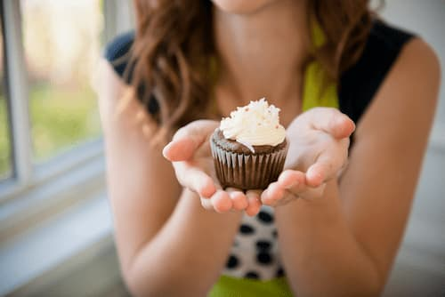

Rachel Lindstrom | Baker and Food Scientist
Welcome! I am here to help you celebrate your special times with a treat. I started baking in 6th grade and made my first wedding cake when I was only 14 years old. My love for baking lead me to get a bachelor's degree in Food Science and a master in Food Science focusing on dairy. Now I am stay at home mom which puts me in the perfect position to create culinary creation for you.